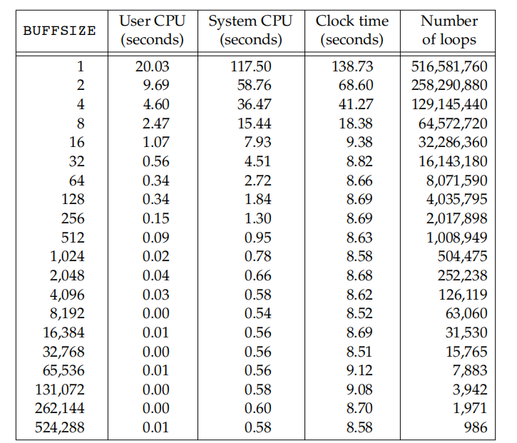

APUE/Chapter3: file and I/O
The functions described in this chapter are often referred to as unbuffered I/O(which each read or write invokes a system call in the kernel), in contrast to the standard I/O routines
File Descriptors
- To the kernel, all open files are referred to by file descriptors. A file descriptor is a non-negative integer. When we open an existing file or create a new file, the kernel returns a file descriptor to the process. When we want to read or write a file, we identify the file with the file descriptor that was returned by
openorcreatas an argument to either read or write. - By convention, UNIX System shells associate file descriptor 0 with the standard input of a process, file descriptor 1 with the standard output, and file descriptor 2 with the standard error
- File descriptors range from 0 through OPEN_MAX−1
open and openat
-
code
-
This function has a multitude of options, which are specified by the
oflagargument. This argument is formed byORingtogether one or more of the following constants from the<fcntl.h>header -
O_SYNCHave each write wait for physical I/O to complete, including I/O necessary to update file attributes modified as a result of the write.O_DSYNCHave each write wait for physical I/O to complete, but don’t wait for file attributes to be updated if they don’t affect the ability to read the data just written. The O_DSYNC flag affects a file’s attributes only when they need to be updated to reflect a change in the file’s data (for example, update the file’s size to reflect more data) -
O_RSYNC Have each read operation on the file descriptor wait until any pending writes for the same portion of the file are complete
-
The fd parameter distinguishes the openat function from the open function. There are three possibilities
- The path parameter specifies an absolute pathname. In this case, the fd parameter is ignored and the openat function behaves like the open function.
- The path parameter specifies a relative pathname and the fd parameter is a file descriptor that specifies the starting location in the file system where the relative pathname is to be evaluated. The fd parameter is obtained by opening the directory where the relative pathname is to be evaluated.
- The path parameter specifies a relative pathname and the fd parameter has the special value AT_FDCWD. In this case, the pathname is evaluated starting in the current working directory and the openat function behaves like the open function.
openatsolved two problems- It gives threads a way to use relative pathnames to open files in directories other than the current working directory while all threads in the same process share the same current working directory, so this makes it difficult for multiple threads in the same process to work in different directories at the same time
- it provides a way to avoid time-of-check-to-time-of-use (TOCTTOU) errors whose baisc idea is that a program is vulnerable if it makes two file-based function calls where the second call depends on the results of the first call. Because the two calls are not atomic, the file can change between the two calls, thereby invalidating the results of the first call, leading to a program error.
creat function
This is equivalent to
close function
When a process terminates, all of its open files are closed automatically by the kernel
lseek function
- Every open file has an associated ''current file offset,’’ normally a non-negative integer that measures the number of bytes from the beginning of the file.Read and write operations normally start at the current file offset and cause the offset to be incremented by the number of bytes read or written An open file’s offset can be set explicitly by calling lseek
- If
whenceisSEEK_SET, the file’s offset is set to offset bytes from the beginning of the file - If
whenceisSEEK_CUR, the file’s offset is set to its current value plus the offset. The offset can be positive or negative - If
whenceisSEEK_END, the file’s offset is set to the size of the file plus the offset. The offset can be positive or negative
- If
- Because a successful call to lseek returns the new file offset, we can seek zero bytes from the current position to determine the current offset This technique can also be used to determine if a file is capable of seeking. If the file descriptor refers to a pipe, FIFO, or socket, lseek sets errno to ESPIPE and returns −1
- Normally,a file’s current offset must be a non-negative integer . Because negative offsets are possible, we should be careful to compare the return value from lseek as being equal to or not equal to −1, rather than testing whether it is less than 0.
- The file’s offset can be greater than the file’s current size, in which case the next write to the file will extend the file. This is referred to as creating a hole in a file and is allowed. Any bytes in a file that have not been written are read back as 0.
- A hole in a file isn’t required to have storage backing it on disk
read function
If the read is successful, the number of bytes read is returned. If the end of file is encountered, 0 is returned.
There are several cases in which the number of bytes actually read is less than the
amount requested:
1. When reading from a regular file, if the end of file is reached before the requested number of bytes has been read.
2. When reading from a terminal device.
3. When reading from a network
4. When reading from a pipe or FIFO.
5. When reading from a record-oriented device
6. When interrupted by a signal and a partial amount of data has already been read.
classic definition
difference
1. void * to char *
2. 0 for end-of-file and -1 for an error
write function
The return value is usually equal to the nbytes argument; otherwise, an error has occurred. A common cause for a write error is either filling up a disk or exceeding the file size limit for a given process
I/O efficiency
an example
#include "apue.h"
#define BUFFSIZE 4096
int main(void)
{
int n;
char buf[BUFFSIZE];
while ((n = read(STDIN_FILENO, buf, BUFFSIZE)) > 0)
if (write(STDOUT_FILENO, buf, n) != n)
err_sys("write error");
if (n < 0)
err_sys("read error");
exit(0);
}
how we chose the BUFFSIZE value?

file sharing
The UNIX System supports the sharing of open files among different processes.
The kernel uses three data structures to represent an open file, and the relationships among them determine the effect one process has on another with regard to file sharing
- Every process has an entry in the process table. Within each process table entry is a table of open file descriptors, which we can think of as a vector, with one entry per descriptor. Associated with each file descriptor are
- The file descriptor flags
- A pointer to a file table entry
- The kernel maintains a file table for all open files. Each file table entry contains
- The file status flags for the file, such as read, write, append, sync, and nonblocking; more on these in Section 3.14
- The current file offset
- A pointer to the v-node table entry for the file
- Each open file (or device) has a v-node structure that contains information about the type of file and pointers to functions that operate on the file. For most files, the v-node also contains the
i-nodefor the file. This information is read from disk when the file is opened, so that all the pertinent information about the file is readily available. For example, thei-nodecontains the owner of the file, the size of the file, pointers to where the actual data blocks for the file are located on disk, and so on
If two independent processes have the same file open, we could have the arrangement
Each process that opens the file gets its own file table entry, but only a single v-node table entry is required for a given file. One reason each process gets its own file table entry is so that each process has its own current offset for the file.
- After each write is complete, the current file offset in the file table entry is incremented by the number of bytes written. If this causes the current file offset to exceed the current file size, the current file size in the i-node table entry is set to the current file offset (for example, the file is extended).
- If a file is opened with the
O_APPENDflag, a corresponding flag is set in the file status flags of the file table entry. Each time a write is performed for a file with this append flag set, the current file offset in the file table entry is first set to the current file size from the i-node table entry. This forces every write to be appended to the current end of file. - If a file is positioned to its current end of file using lseek, all that happens is the current file offset in the file table entry is set to the current file size from the i-node table entry (Note that this is not the same as if the file was opened with the O_APPEND flag)
- The lseek function modifies only the current file offset in the file table entry. No I/O takes place
It is possible for more than one file descriptor entry to point to the same file table entry. This also happens after a fork when the parent and the child share the same file table entry for each open descriptor
Note the difference in scope between the file descriptor flags and the file status flags. The former apply only to a single descriptor in a single process, whereas the latter apply to all descriptors in any process that point to the given file table entry
Atomic Operations
Any operation that requires more than one function call cannot be atomic, as there is always the possibility that the kernel might temporarily suspend the process between the two function calls
#include <unistd.h>
ssize_t pread(int fd, void *buf, size_t nbytes, off_t offset);
//Returns: number of bytes read, 0 if end of file, −1 on error
ssize_t pwrite(int fd, const void *buf, size_t nbytes, off_t offset);
//Returns: number of bytes written if OK, −1 on error
dup and dup2 Functions
An existing file descriptor is duplicated by either of the following functions
#include <unistd.h>
int dup(int fd);
int dup2(int fd, int fd2);
//Both return: new file descriptor if OK, −1 on error

sync,fsync , and fdatasync function
Traditional implementations of the UNIX System have a buffer cache or page cache in the kernel through which most disk I/O passes. When we write data to a file, the data is normally copied by the kernel into one of its buffers and queued for writing to disk at some later time. This is called delayed write
To ensure consistency of the file system on disk with the contents of the buffer cache, the sync, fsync, and fdatasync functions are provided.
#include <unistd.h>
int fsync(int fd);
int fdatasync(int fd);
//Returns: 0 if OK, −1 on error
void sync(void);
The sync function simply queues all the modified block buffers for writing and returns; it does not wait for the disk writes to take place.The function sync is normally called periodically (usually every 30 seconds) from a system daemon, often called update.
The function fsync refers only to a single file, specified by the file descriptor fd, and waits for the disk writes to complete before returning.(database)
The fdatasync function is similar to fsync, but it affects only the data portions of a file. With fsync, the file’s attributes are also updated synchronously
fcntl function
#include <fcntl.h>
int fcntl(int fd, int cmd, ... /* int arg */ );
//Returns: depends on cmd if OK (see following), −1 on error
The fcntl function is used for five different purposes 1. Duplicate an existing descriptor (cmd = F_DUPFD or F_DUPFD_CLOEXEC) 2. Get/set file descriptor flags (cmd = F_GETFD or F_SETFD) 3. Get/set file status flags (cmd = F_GETFL or F_SETFL) 4. Get/set asynchronous I/O ownership (cmd = F_GETOWN or F_SETOWN) 5. Get/set record locks (cmd = F_GETLK, F_SETLK, or F_SETLKW)
ioctl function
The ioctl function has always been the catchall for I/O operations. Terminal I/O was the biggest user of this function
#include <unistd.h> /* System V */
#include <sys/ioctl.h> /* BSD and Linux */
int ioctl(int fd, int request, ...);
//Returns: −1 on error, something else if OK
Normally, additional device-specific headers are required. For example, the ioctl commands for terminal I/O, beyond the basic operations specified by POSIX.1, all require the header.
Each device driver can define its own set of ioctl commands. The system, however, provides generic ioctl commands for different classes of devices
/dev/fd
Newer systems provide a directory named /dev/fd whose entries are files named 0, 1, 2, and so on
In the function call
most systems ignore the specified mode, whereas others require that it be a subset of the mode used when the referenced file (standard input, in this case) was originally opened. Because the previous open is equivalent to
the descriptors 0 and fd share the same file table entry
For example, if descriptor 0 was opened read-only, we can only read on fd. Even if the system ignores the open mode and the call succeeds, we still can’t write to fd.
The main use of the /dev/fd files is from the shell. It allows programs that use pathname arguments to handle standard input and standard output in the same manner as other pathnames, like cat - to cat /dev/fd/0
The special meaning of - as a command-line argument to refer to the standard input or the standard output is a kludge that has crept into many programs. There are also problems if we specify - as the first file, as it looks like the start of another command-line option. Using /dev/fd is a step toward uniformity and cleanliness.